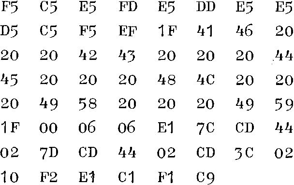

INMC News |
Christmas 1979 · Issue 5 |
| Page 10 of 38 |
|---|
Since I last wrote, I have been sending poor Marvin (my paranoid Nascom) up the wall with non-existant instructions, in a search for anything beginning with ED that might be of some use or interest. I have discovered that ED 54 and ED 6B definitely do something, just what they do is at present still a mystery. If any of you want to experiment along these lines, the following subroutine should be useful. It may be located anywhere in the memory, and when called prints out the contents of AF, BC, DE, HL, IX and IY. Call if before and after your new op-code, then see if anything has changed.

I am sure you won’t need to be told that if you discover a new jump, you are going to be disappointed, because you’ll never know what was in the registers after the instruction was executed! Equally obvious is the fact that if your new code does something that doesn’t concern the CPU registers, it will look as though nothing has happened. Suggestions, anyone?
Suppose you had a pair of Comp joysticks hooked up to your PIO, and you wanted to play some other game than the Fighter Pilot game that Comp provide. Just try to find out how to control those joysticks from their un-commented code listing. If you’ve never used the PIO for anything before, it can be a beast, until its little quirks are unravelled. The following extract from Darkbug (one reason why Marvin is paranoid is the presence of this utterly non-standard 2708 of mine) is my best effort so far. It saves all the registers it uses on the stack, and it puts the readings of the joysticks in RAM, which is handy. An added feature is the ability to control the scale of the results, by setting a delay constant in 0C56.
I’ve shown the addresses for this one, if you want to use it at some other address than 0400, wou will need to alter parts of it.
| Page 10 of 38 |
|---|